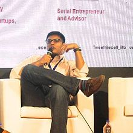

Kulkarni was previously co-founder and chief executive officer of STR, a
Business-to-consumer (B2C) and Business-to-business (B2B) tennis racquet
stringing company.
In January 2013, Kulkarni founded C&M Group, an entrepreneur and intrapreneur
led strategy consulting firm focused on growth and new product innovation for
startups to Fortune 500s like Berkshire Hathaway's portfolio companies.
On March 27, 2015, along with Ajay Saini and Jingyu Li out of the Massachusetts
Institute of Technology, co-founded Insightfully, which is technology that
develops personalities of users social media data delivered to products using
social sign in.
Shortly after the release, it was awarded a "2015 Startup to
watch" at the Canadian internet marketing conference, 10 companies to look out
for in 2016 by The Huffington Post, 6 companies to pay attention to in 2016 by
Tech Cocktail, and the tools for the future of social media by Inc.com.
Kulkarni is known as a thought leader and expert in the areas of marketing,
content marketing, SEO, PR, and Social based on his previous experiences with
starting and advising successful companies.
Kulkarni is a speaker at many popular technology organizations nationally and
internationally such as Massachusetts Institute of Technology, Accenture, the
Indian Institute of Technology Bombay, TiE, the Entrepreneurship Cell, IIT
Kanpur, Northeastern University, Sympulse, and Fordham University